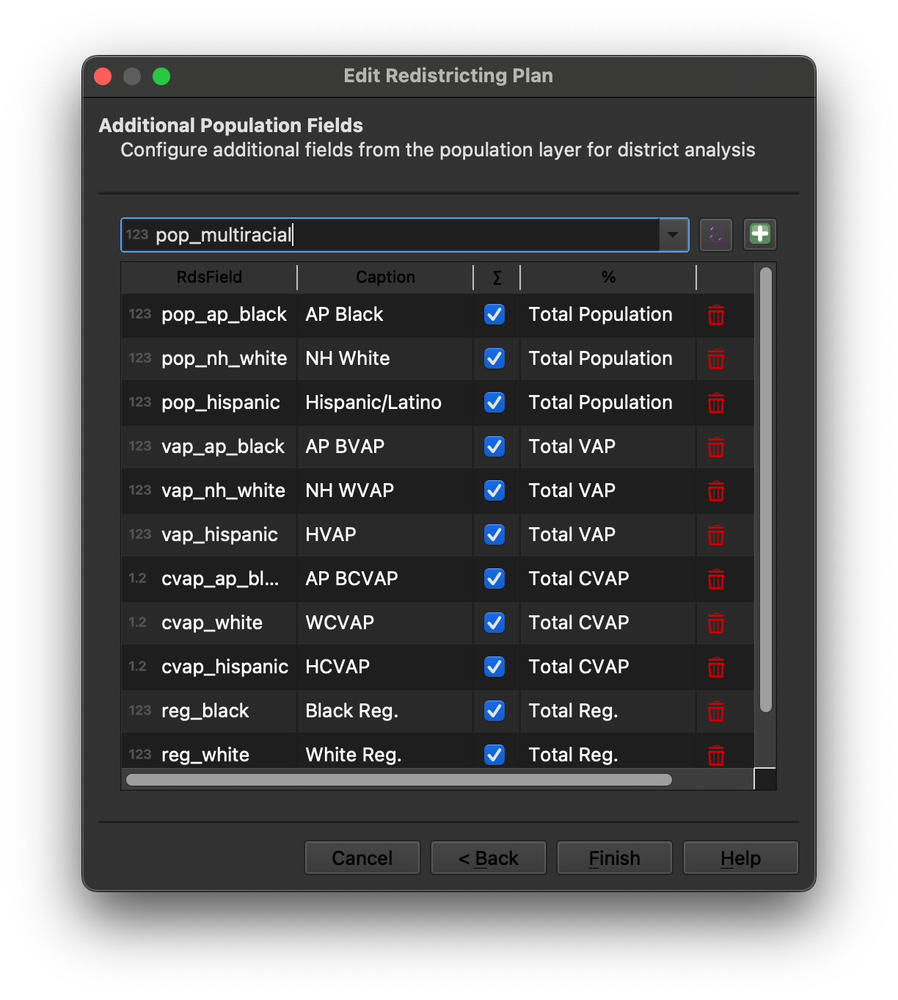
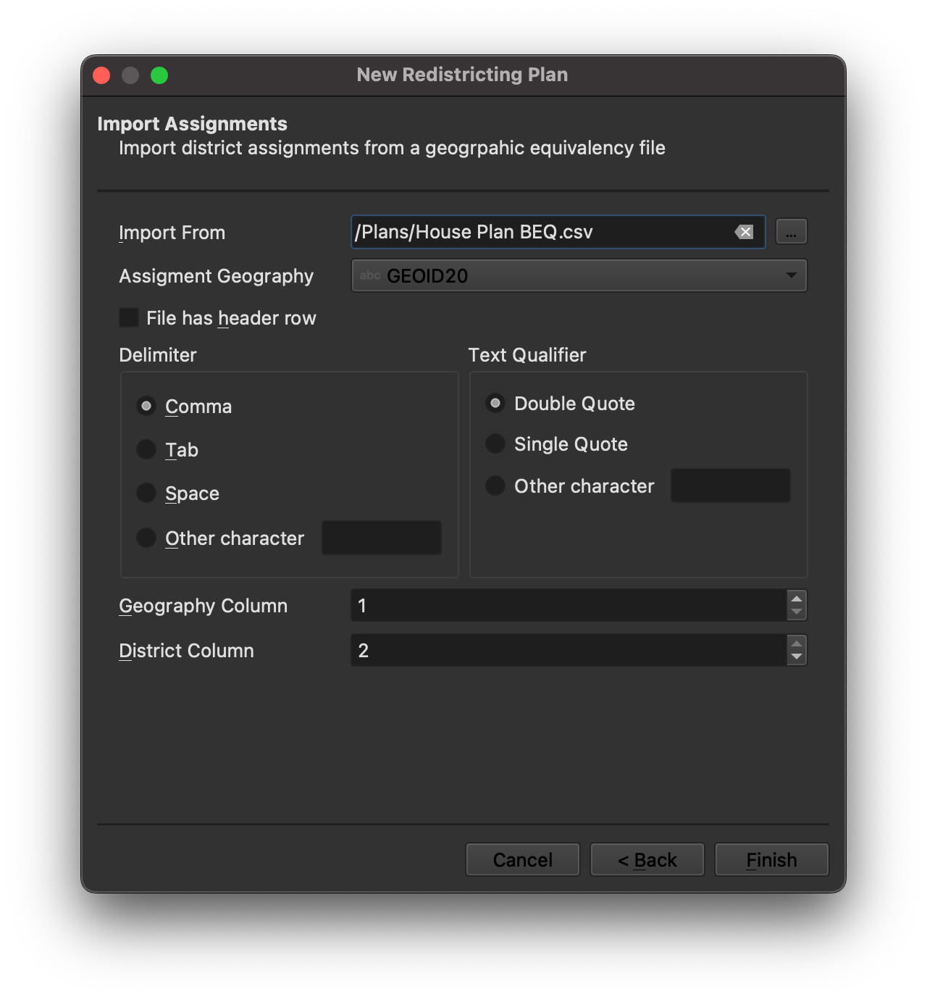

Create a New Redistricting Plan¶
Note
Before you can create a plan, you must create a QGIS project that includes the layer or layers containing the geographic units and demographic data from which your redistricting plan will be built.
The "Create New Plan" dialog¶
When New Redistricting Plan is selected from the QGIS redistricting plugin toolbar or menu, the “Create New Plan” dialog guides you through creating a redistricting plan.
Page 1 - Plan Details¶
The first page of the “Create New Plan” dialog allows you to select a name for your plan, provide the path to a new GeoPackage file that will contain your plan layers, and specify the number of districts in your plan and the number of members who will represent those districts. You may also provide an optional description. The following constraints apply.
The plan name must be unique among redistricting plans for your project
There must be two or more districts in your plan
The number of members must be equal to or greater than the number
Page 2 - Geography¶
The second page of the “Create New Plan” dialog allows you to define the geography from which your plan will be built.
Import Geography from Layer - Specify the layer containing the smallest
units of geography you will use to create your plan (e.g., census blocks).
QGIS Redistrictin Plugin can use geography from any vector layer format
supported by QGIS. However, formats such as PostGIS or GeoPackage, which
allow for indexes on attribute fields, provide better performance than
formats such as ESRI Shapefile or GeoJson.
Primary Geography ID Field - Specify the layer attribute that uniquely
identifies the geographic units. This field will be used to join the layer
containing the demographic data (if it is different from the geography layer).
Geography Name - You may also provide a more descriptive label for your
geographic units here.
Additional Geography - Here, you may define additional units of geography
that may be used to build your districts. Geography is defined using fields
from the primary geography layer. For example, if your primary layer is U.S.
Census Bureau census blocks, and each block contains an identifier for the
county or census tract in which it falls, you can add that field to the list
of additional geography to allow building districts from counties or census
tracts. You may define additional geography using individual attributes or
QGIS expressions. Once the addtional unit is added, a more descriptive caption
or label can be provided.
Page 3 - Population¶
The third page of the “Create New Plan” dialog allows you to specify the layer containing the population data your plan will use.
Population Layer - If your population data is contained in a separate
layer from your geographical building blocks, specify the population layer
here. Population data must be provided at the same level of geography as the
geographic units. If not using a separate population layer, specify “Use the
geography layer” here.
Join Field - If using a separate population layer from the geography layer,
specify the field in the population layer that will be used to join the
population data to the geographic units. This field must contain the same
geographic identifier as the Geo ID Field used to uniquely identify the
geography.
Total Population Field - Specify the name of the attribute containing the
total population for each geographic unit. This field is used to validate that
each district falls within the maximum deviation allowed for the plan.
Maximum Deviation - Specify the maximum population deviation above or below
the ideal population for each district that is permitted for your plan.
Deviation Measure - Select how deviation will be measured for your plan.
Over/Under limits the deviation of each district to plus or minus the
specified maximum. Top-to-Bottom limits the deviation from the largest to
the smallest district to the specified maximum.
Additional Population Totals - Here, you may optionally define additional
population totals that will be reported for your districts. For example,
voting age population or total registered voters. These units may be used as
the base for calculating percentages for the data fields. See Page 4 - Additional Demographic Data.
You may define additional population totals using individual attributes or
QGIS expressions. Once the addtional unit is added, a more descriptive caption
or label can be provided.
Page 4 - Additional Demographic Data¶
The fourth page of the “Create New Plan” dialog allows you to specify additional demographic data that will be tracked for each district in your plan.
Demographic data is defined using fields from the population layer. You may define demographic using individual attributes from the population layer or QGIS expressions. Once the addtional demographic data field is added, a more descriptive caption or label can be provided, and you can specify whether to track the total population for the demographic group and/or the population of the deographic group as a percentage of total population or one of the additional population fields defined in your plan.
Page 5 - Import Assignments¶
The fifth and final page of the “Create New Plan” dialog allows you to optional import district assignments for your plan from a CSV or Microsoft Excel file. You may also import assignments at a later point using the “Import Assignments” option available on the QGIS redistricting plugin menu.
